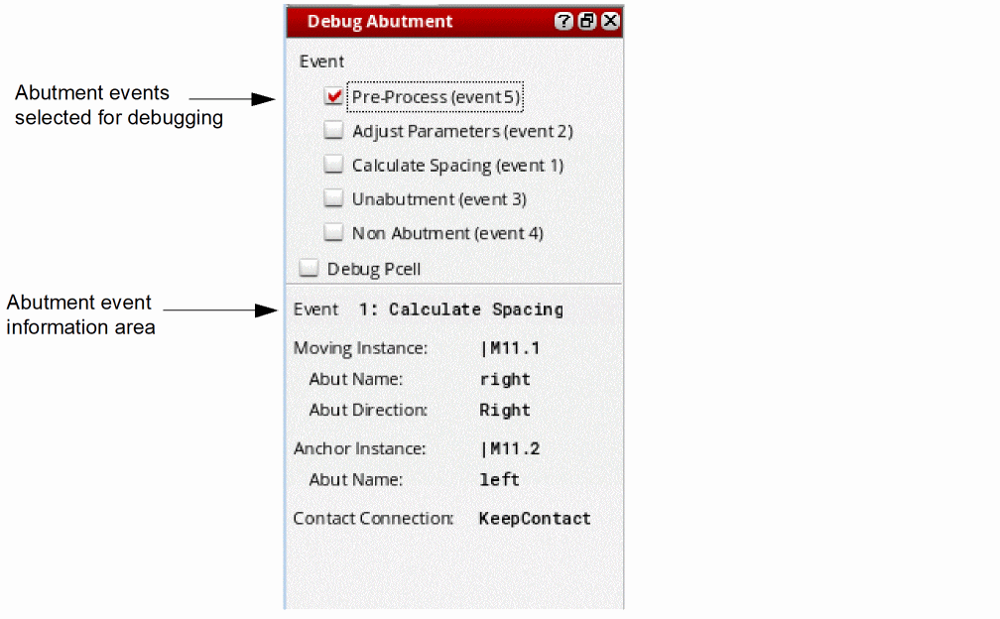

Using the Debug Assistant
This topic describes how to use the Debug Abutment assistant to debug a user-defined abutment function.
-
Choose Launch – Plugins – Debug Abutment from the layout window menu bar.
The Debug Abutment assistant is displayed. -
Choose the abutment events you want to debug.
When you abut two devices (or two chains), the device abutment information is displayed in the assistant and when one of the selected events is executed:- SKILL IDE is opened automatically and displays the user-defined abutment function.
- The device abutment flow pauses at the user-defined abutment function, giving you the opportunity to step through the abutment function to debug the specified event using SKILL IDE.
- When current event is finished, control is returned to the abutment engine.
If another selected event is executed, the debug abutment flow returns to step 2a. - Select the Debug Pcell check box to debug the Pcell evaluation that is triggered by the code block that modifies the Pcell parameter inside the Pcell abutment function.
- Repeat these steps until device abutment is finished.
The assistant does not show any abutment event results. To see these results, go to the Debug Abutment simulator.
Related Topics
Return to top